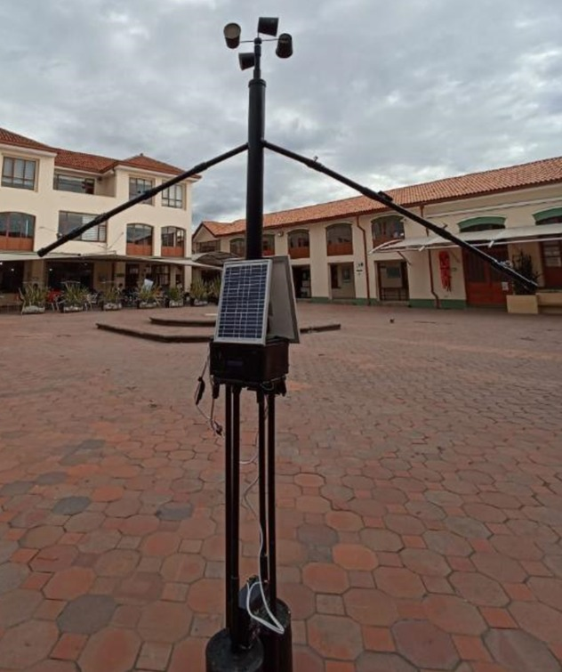
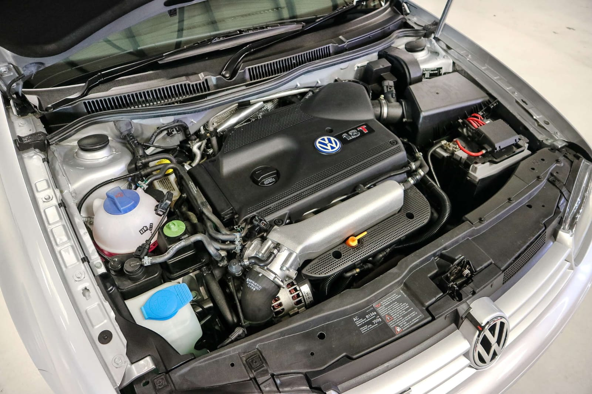

Proyectos Realizados
Proyecto A
El proyecto "Construcción de una estación meteorológica autosustentable-Enma" se centra en la creación de una estación meteorológica desde cero, aprovechando la programación de sensores con Arduino. El objetivo principal es recopilar datos meteorológicos precisos para mejorar las predicciones climáticas. La estación se diseñará para funcionar de manera autosustentable, con energía solar y baterías recargables, garantizando un funcionamiento continuo. La información recopilada incluirá datos como temperatura, humedad, presión atmosférica, velocidad del viento y dirección, así como la radiación solar. Este proyecto busca promover la conciencia y la capacidad de prever condiciones climáticas, lo que puede ser de gran utilidad en diversas aplicaciones, desde la agricultura hasta la gestión de desastres.. Resultados obtenidos: Prototipo construido y recoleccion de datos climatologicos
Proyecto B
En este proyecto, lideré un equipo dedicado a la reprogramación electrónica de un Volkswagen Golf MK4 GTI para mejorar su rendimiento y eficiencia. La reprogramación se centró en optimizar los parámetros del motor, el sistema de inyección de combustible y la gestión de la transmisión para lograr un equilibrio óptimo entre potencia, economía de combustible y durabilidad del motor. Resultados obtenidos: resultados optimos del auto
